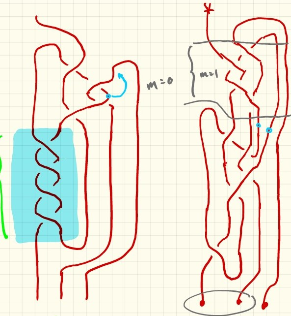

Quotient Tangles of $(2, 2m + 1)$ Torus Knots
where $m$ is the number of "band crashes" in the designated region  {% include header.html %} {% for i in (1..3) %} $m = {{i}}$
{% assign j = i | times: 2 | plus: 1 %}
Original Tangle
{% include cixin_liu_{{i}}.html %}
'Small Arc' Tangle
{% include cixin_liu_{{i}}_small.html %}
{% endfor %}